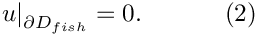
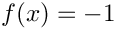
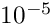
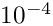

In this document, we discuss the solution of a 2D Poisson problem using oomph-lib's powerful mesh adaptation routines:
 , with homogeneous Dirichlet boundary conditions , with homogeneous Dirichlet boundary conditions  |
![\[ \sum_{i=1}^2 \frac{\partial^2u}{\partial x_i^2} = -1, \ \ \ \ \ \ \ \ \ \ (1) \]](form_0.png)

The sharp corners in the domain create singularities in the solution (its derivatives are unbounded) and so accurate results can only be obtained if we use a sufficiently fine discretisation. Implementing this by uniform mesh refinement would create a huge number of elements in the interior of the domain where the fine discretisation is not required.
To avoid this problem, oomph-lib provides mesh adaptation routines that automatically adapt the mesh, based on a posteriori error estimates. Regions in which an error estimator indicates that the solution is not resolved to the required accuracy are refined; automatic unrefinement is performed in regions where the discretisation is unnecessarily fine.
We provide a detailed discussion of the driver code fish_poisson.cc which illustrates a variety of mesh refinement procedures. [The alternative driver code fish_poisson_no_adapt.cc solves the same problem without mesh adaptation. Its structure is very similar to that in the 2D Poisson problem considered earlier. It is provided mainly to illustrate how easy to it is incorporate adaptivity into a Problem.]
In the current example we demonstrate how to use existing refineable meshes and elements. Two further examples will demonstrate how easy it is to create refineable meshes in domains with polygonal boundaries and in domains with curvilinear boundaries.
Global parameters and functions
The namespace ConstSourceForPoisson only contains the constant source function .
The driver code
The main code is very short and calls two functions that illustrate two different adaptation strategies:
- A black-box approach in which the adaptation cycle
- solve the problem on the initial, coarse mesh
- compute an error estimate
- adapt the mesh
- solve again
- In the second approach we start by performing a number of uniform mesh refinement steps, and then use incremental adaptations, allowing us to document how the refinement proceeds.
Black-box adaptation
We start by creating the Problem object, using the refineable equivalent of the QPoissonElement – the RefineableQPoissonElement, which is templated by the dimension and the number of nodes along the element's edges; the RefineableQPoissonElement<2,3> is a nine-node (bi-quadratic) quad element.
After creating the DocInfo object, we document the (default) adaptivity targets:
These include
- The target for the maximum error: Any elements whose error estimate exceed this value will be split into four "sons".
- The target for the minimum error: Any elements whose error estimate lies below this value are deemed to be unnecessarily small and are scheduled for (possible) unrefinement. [Elements can only be unrefined (i.e. merged with their "brothers") if their "brothers" are also scheduled for unrefinement.]
- The minimum refinement level: In problems with curvilinear domain boundaries it is often necessary to retain a reasonably accurate representation of the boundary (e.g. for postprocessing purposes), even if the error estimate suggests that the mesh could be unrefined further.
- The maximum refinement level: In problems where the solution has singularities, the refinement process would continue indefinitely, therefore an upper bound on the refinement level must be imposed.
- Finally, because unrefinement is done purely to speed up the computation, it would not make sense to adapt the mesh if this process would only remove a few elements, while forcing the re-computation of the solution on an only slightly coarsened mesh. Therefore, no mesh adaptation is performed if
- the adaptation would only perform unrefinements
- and the number of elements scheduled for unrefinement is below a certain threshold.
These default parameters can be changed by the user; see Comments and Exercises.
The fully-adaptive solution of the problem is very simple. We simply pass the maximum number of adaptations to the Newton solver and document the results. Done!
Incremental adaptation
To allow the user more control over the mesh adaptation process, oomph-lib provides a number of functions that perform individual adaptation steps without re-computing the solution immediately. This allows the user to
- perform uniform mesh refinement and unrefinement,
- impose a specific refinement pattern,
- monitor/document the progress of the automatic adaptation.
The second driver function illustrates some of these functions. We start by setting up the problem, create the DocInfo object and document the adaptivity targets, exactly as before:
Next, we solve the problem on the original, very coarse mesh and document the result:
We know that the result is unlikely to be very accurate, so we apply three levels of uniform refinement, increasing the number of elements from 4 to 256, and re-compute:
The solution looks much smoother but we suspect that the corner regions are still under-resolved. Therefore, we call the Problem::adapt() function which computes an error estimate for all elements and automatically performs a single mesh adaptation (refinement/unrefinement) step. If this adaptation changes the mesh, we recompute the solution, using the "normal" Newton solver without automatic adaptation. We document the solution and continue the adaptation cycle until Problem::adapt() ceases to change the mesh:
The progress of the adaptation is illustrated in the animated gif at the beginning of this document. The first frame displays the solution on the original four-element mesh; the next frame shows the solution on the uniformly refined mesh; the final two frames show the progress of the subsequent, error-estimate-driven mesh adaptation.
The problem class
The problem class is virtually identical to that used in the 2D Poisson problem without mesh refinement. In the present problem, we leave the function Problem::actions_before_newton_solve() empty because the boundary conditions do not change. The function RefineableFishPoissonProblem::mesh_pt() overloads the (virtual) function Problem::mesh_pt() since it returns a pointer to a generic Mesh object, rather than a pointer to the specific mesh used in this problem. This avoids explicit re-casts in the rest of the code where member functions of the specific mesh need to be accessed.
The Problem constructor
We start by creating the mesh, using oomph-lib's RefineableFishMesh object:
Next, we create an error estimator for the problem. The Z2ErrorEstimator is based on Zhu and Zienkiewicz's flux recovery technique and can be used with all elements that are derived from the ElementWithZ2ErrorEstimator base class (or with functions that implement the pure virtual functions that are defined in this class) – the RefineableQPoissonElement is an element of this type.
Next we pin the nodal values on all boundaries, apply the homogeneous Dirichlet boundary conditions, pass the pointer to the source function to the elements, and set up the equation numbering scheme.
Post-processing
The post-processing routine writes the computed result to an output file, labeled with the identifiers specified in the DocInfo object.
Comments and Exercises
The purpose of this example was to provide a high-level overview of oomph-lib's mesh adaptation procedures. We demonstrated that the implementation of full adaptivity only required us to
- replace the
FishMeshand theQPoissonElementobjects by their refineable equivalents,RefineableFishMeshandRefineableQPoissonElement, respectively - specify the error estimator, and
- specify the maximum number of adaptations for the black-box adaptive Newton solver.
(Compare the Problem specification for the current problem to that of its non-refineable equivalent, contained in the alternative driver code fish_poisson_no_adapt.cc.)
Since most of the "hard work" involved in the mesh adaptation is "hidden" from the user, we highlight some important aspects of the procedure:
Automatic transfer of the solution/boundary conditions during the mesh adaptation
The Problem::adapt() function automatically determines the correct boundary conditions for newly created nodes on the Mesh boundary; it automatically updates the equation numbering scheme, and interpolates the solution from the original mesh onto the adapted mesh. This is important in nonlinear problems where the provision of a good initial guess for the Newton iteration is vital; and in time-dependent problems where the solution at one timestep provides initial conditions for the next one. See the discussion of the adaptive solution of the unsteady heat equation for more details. Furthermore, the source function pointers are automatically passed to an element's four "son" elements when the element is subdivided. This allows the adaptation to proceed completely automatically, without any intervention by the "user". On return from Problem::adapt() the problem can immediately be re-solved.
In some special cases, certain actions may need to be performed before or after the mesh adaptation (e.g. if flux boundary conditions are applied by FaceElements; this is explained in another example). To ensure that these steps are performed when the adaptation is controlled by the "black-box" adaptive Newton solver, the Problem class provides the two empty virtual functions
and
which are called automatically before and after the adaptation. The "user" can overload these in his/her specific Problem class to implement such actions.
Automatic mesh adaptation in domains with curvilinear boundaries
The mesh adaptation not only increases the number of elements but also produces a more accurate representation of the curvilinear domain boundary – new boundary nodes are placed exactly onto the analytically-defined, curvilinear boundary, rather than on the boundaries of the "father" element, which only provides an approximate representation of the exact domain boundary. This is achieved by employing a MacroElement-based representation of the Domain – we will discuss this in more detail in another example.
Problem adaptation vs. Mesh adaptation
Many adaptation routines in the Problem class have equivalents in the RefineableMesh class. It is important to appreciate the important differences between them: If adaptation is performed at the Problem level, the adapted Problem is fully functional, i.e. boundary conditions will have been assigned for newly created nodes on the mesh boundary, the equation numbering scheme will have been updated, etc. The adapted Problem can therefore be re-solved immediately. Conversely, if a mesh is refined directly, using the member functions of the RefineableMesh class, many of these additional tasks need to be performed "by hand" before the adapted Problem can be resolved.
Exercises
To familiarise yourself with oomph-lib's mesh adaptation procedures we suggest the following exercises:
- When the Poisson problem is solved with the default refinement targets, no elements are unrefined. Increase the minimum permitted error from its default value of  to  by adding the statement beforeproblem.mesh_pt()->min_permitted_error()=1.0e-4;This value forces an unrefinement of several elements in the mesh:problem.mesh_pt()->doc_adaptivity_targets(cout);
 Plot of the solutions obtained with the modified adaptivity targets.
Plot of the solutions obtained with the modified adaptivity targets. - Convince yourself that
Problem::adapt()does indeed interpolate the solution from the coarse mesh to the fine mesh – callProblem::doc_solution(...)before and after its execution.
- The
Problem::refine_uniformly()function has a counterpartProblem::unrefine_uniformly(). Why does this function not simply unrefine every single element in the mesh? Explore the action ofProblem::unrefine_uniformly()by plotting the solution before and after a few executions of this function. Uniform unrefinement
Uniform unrefinement - Impose a "user-defined" refinement pattern by calling the function
Problem::refine_selected_elements(...).
Source files for this tutorial
- The source files for this tutorial are located in the directory:
demo_drivers/poisson/fish_poisson/ - The driver code is:
demo_drivers/poisson/fish_poisson/fish_poisson.cc
PDF file
A pdf version of this document is available.